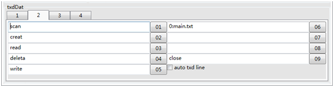
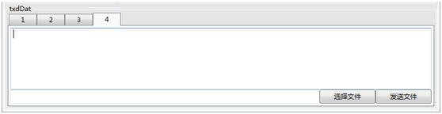

原文连接:https://www.cnblogs.com/xutopia/p/10791133.html
利用C#基于WPF开发的多功能串口调试助手
概述
在嵌入式开发的过程中，由于经常需要下位机与上位机通信，下位机与上位机之间的通信大多都是串口通信，网上大多数串口调试助手使用起来极为不方便，这里就自己开发了一个串口调试助手，辅助嵌入式开发。
链接：https://pan.baidu.com/s/1zvhcES4QIjpDDJGzth1qOA
提取码：lp2x
需求分析
1，正常的串口收发功能；
2，数据保存和解码功能；
附加功能
1，参数记忆功能；
2，多功能发送功能；
3，按照协议解码并保存数据的功能。
针对需求开发如下串口调试助手：（界面太丑，勿怪）
框1：正常数据发送
框2：多条发送，并且支持自动换行发送；

框3：定时发送
框4：文件发送

使用方法
点击check COM按钮，检查电脑存在的端口
点击save data按钮，保存原始数据；
如果是以HEX方式接受数据，保存的就是接收的十六进制数据，如果是以ASC方式接收的，会把接收显示框中的数据保存下来，保存数据默认路径为应用程序路径下的DOC文件夹。
点击decode data会按照读取到的协议文件，把解码数据保存到DOC文件夹下面；
选中show：会把数据实时显示在接收数据框中；
选中decode：会在接收数据的过程中实时解码数据并把数据解码数据实时显示在接收数据框中；
选中rxOnly：只接收数据，不实时显示，不实时解码，有助于接收数据量比较大的情况。
Setting界面：
点击read protocol读取协议文件（txt），会把协议加载到软件中，可以把接收到的数据按照协议解码。在log框中会显示读取到的通信协议信息。

帮助：
协议文件格式如下：
按照通信协议编写协议文件
1 /*
2 this is a protocol
3 2019-03-28
4 正文中不可以出现注释
5 e.g. 正文//注释内容
6 e.g. 正文
7 //注释内容
8 正文开头第一行必须是frameType
9 */
10 /*
11 目前最后一行必须是空行
12 */
13 frameType=header2 function
14 header1=0xA0
15 header2=0xA1
16 body=1
17 function=0xB1
18 index=1,type=unsigned char
19 index=2,type=unsigned short
20 index=3,type=unsigned int
21 index=4,type=short
22 index=5,type=int
23 index=6,type=float
24 index=7,type=double
25 endbody
26 body=2
27 function=0xB2
28 index=1,type=unsigned char
29 index=2,type=unsigned short
30 index=3,type=unsigned int
31 index=4,type=short
32 index=5,type=int
33 index=6,type=float
34 index=7,type=double
35 endbody
36 body=3
37 function=0xB3
38 index=1,type=unsigned char
39 index=2,type=unsigned short
40 index=3,type=unsigned int
41 index=4,type=short
42 index=5,type=int
43 index=6,type=float
44 index=7,type=double
45 endbody
46 check=CRC-CCITT
47 -----END FILE-----效果展示：

更新日志
2019-05-06
修复ASC接收时可能会出现死机的问题；
测试实时解码的功能；
加入页面显示的选择项；